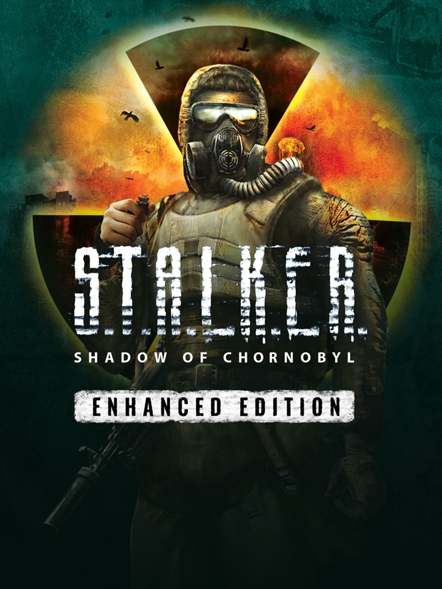

S.T.A.L.K.E.R.: Shadow of Chornobyl - Enhanced Edition
S.T.A.L.K.E.R.: Shadow of Chornobyl - Enhanced Edition
Details
|  | |
| Playtime | Not Played |
| Last Activity | Never |
| Added | 03/06/2025 0:51:08 |
| Modified | 03/06/2025 0:52:02 |
| Completion Status | Not Played |
| Library | Steam |
| Source | Steam |
| Platform | PC (Windows) |
| Release Date | 20/05/2025 |
| Community Score | |
| Critic Score | |
| User Score | |
| Genre | Adventure Role-playing (RPG) Shooter |
| Developer | GSC Game World |
| Publisher | GSC Game World |
| Feature | Single Player |
| Links | Steam GOG Official YouTube Discord Epic Uknown Twitch Uknown |
| Tag | |
Description
Back to where it all started — the S.T.A.L.K.E.R. Trilogy, one of the most visionary and groundbreaking survival first-person-shooters of all time returns. Now upscaled, enhanced must-play journey for a new generation.
ENHANCED EDITION FEATURES:
Atmospheric visual enhancements including God Rays, Dynamic Screen Space Reflections, and Advanced Global Illumination effects.
Redesigned water shaders, upgraded skyboxes, and wetness effects.
Improved visuals with upscaled textures featuring more detailed NPCs and environment.
Upgraded weapon Field of View and models.
Multiple bugfixes and quality of life tweaks.
Full gamepad support.
S.T.A.L.K.E.R.: Shadow of Chornobyl, the first chapter of the Legends of the Zone Trilogy, which started it all. Welcome to the former exclusion territory near the Chornobyl Nuclear Power Plant… the most dangerous place on Earth. Play as The Marked One, face sinister mysteries, radiation-soaked anomalous threats and moral dilemmas, as your decisions determine your destiny in this immersive dark sci-fi saga.
EMBRACE THE DESOLATION
Navigate the isolation and suspense of a harsh Eastern European wilderness, filled with hundreds of desperate vagabonds, mutant creatures, and lurking dangers unseen.
EXPLORE ANOMALOUS WORLD
Venture through realistic locations deeply rooted in the anomalous aftermath of the Chornobyl disaster. Each area holds its own grim secrets and discoveries, awaiting the bravest stalkers.
SURVIVE AT ALL COSTS
Treacherous anomalies, invisible radiation, starvation, and ruthless mutants will hunt you in the Zone. Carefully manage your resources and utilize an arsenal of over 30 weapons. Your choices pave a non-linear path toward multiple endings in your quest to uncover the Zone's darkest secrets. 
Good Hunting, stalker!